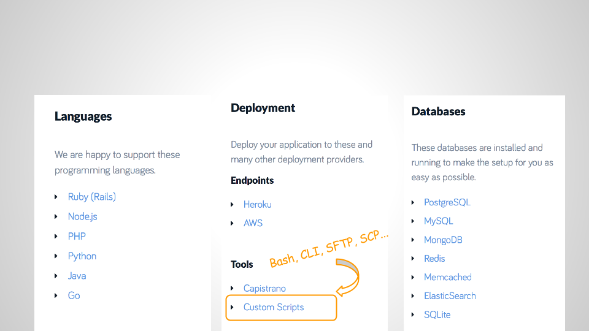

CI & Deployment w/ Codeship
A quick introduction
Richard Sentino / @mindginative
Target Audience
- New Codeship
- Beginners of continuous integration and deployment
- Looking to explore alternative CI & deployment tools
Your Setup
Room For Improvement
Needs automation BUT use less (at least for now):
- Advanced configuration management tools
- Deployment frameworks
Room For Improvement
Leverage existing skills & tools
- Bash Scripts
- CLI
- SCP/SFTP/RSYNC
- SSH
Codeship
- A hosted continuous integration and deployment software as a service (SaaS) for web applications.
- Simple pricing: free (no CC required), basic, pro
Codeship
Codeship - Pipeline
Codeship - Supported Technologies
Deployment Dashboard Example
At the end of the day
We want to:
- do quick software releases
- do multiple deployments per day
- automate integration and deployment
- save time and money
Booktrack ❤ Codeship
-
Pipeline
- prod, dev, demo
-
Front-end
- NodeJS, GulpJS, PhantomJS
-
Average Daily Deployment
- 15/day
Thank You!
Richard Sentino / booktrack.com / @mindginative
Try codeship.io